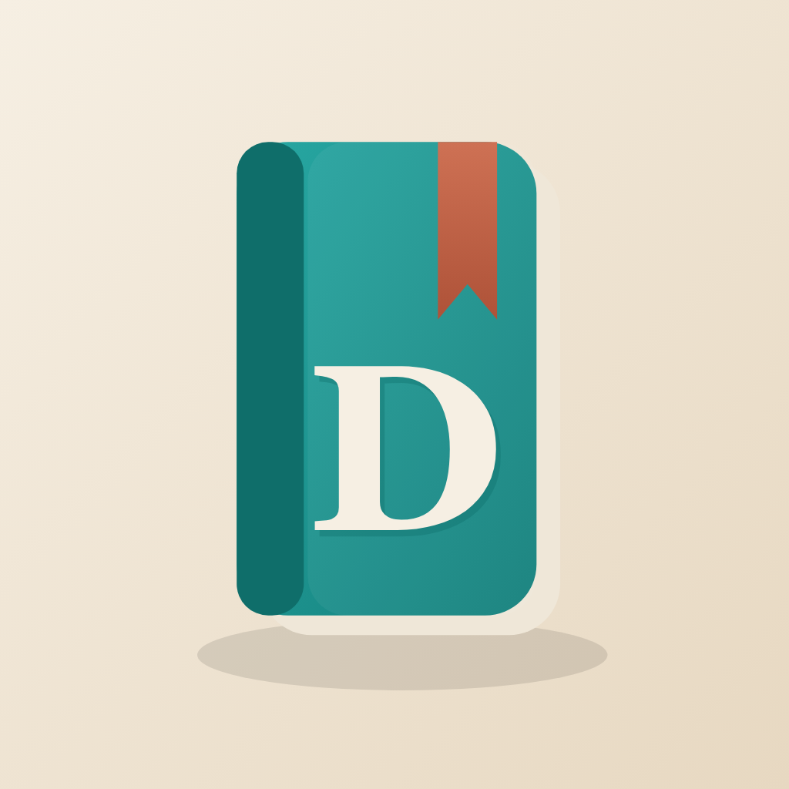

Daykeep
A calm, private journal for iPhone, iPad and Mac. Write with your photos, keep as many journals as you like, and turn any of them into a real printed book.
Free to use, with an optional one-off Plus unlock — no subscription, no account, no adverts.
What it is
Daykeep is a place to keep your days. Write an entry, drop in the photos that belong with it, and add a caption or two — the writing and the pictures stay together, in the order you put them. Over weeks and years it becomes something worth keeping: a record of a trip, a child growing up, a year of ordinary life.
It is deliberately quiet. There is no feed, no streak to protect, nobody else in it. Just you, your words and your photos.
Why Daykeep
- Private by design. Your journal lives in your own iCloud and syncs across your devices. There is no Daykeep account and no server of mine that ever sees your entries.
- Photos are first-class. Add as many as you like, place them between the words, set a cover, and let the entry hold its own little gallery.
- As many journals as you need. One for the family, one for a trip, one just for you.
- Made for keeping, not scrolling. Browse by day, by tag, or with “On This Day”; search back through everything you have written.
- It goes on paper. Print a journal as a clean book straight from the app, or send it to Mosaic Collage Maker for a fully designed photobook.
- One-off, not a subscription. The core app is free; a single Plus purchase unlocks the extras, for good.
What you can do
- Write entries that mix text and photos in any order
- Keep multiple journals, each with its own colour and cover
- Tag entries and filter by tag; jump to “On This Day” in past years
- Add place and weather to an entry automatically
- Search across everything you have written
- Share a single entry as a beautifully designed card
- Back up and restore your whole journal as a file
- Print a journal as a book, or export it to Mosaic Collage Maker
Daykeep and Mosaic Collage Maker
Daykeep Plus
Free forever — and a one-off unlock for the extras
Everything you need to keep a journal is free: writing, unlimited photos, iCloud sync, backup, and restoring your own backups. Daykeep Plus is a single purchase — no subscription — that adds:
Common questions
Where is my journal stored?
In your own iCloud account, and on your devices. Daykeep has no account system and no server that stores your entries — I never see them. See the privacy policy.
Does it work on all my devices?
Yes. Daykeep is one purchase that runs on iPhone, iPad and Mac, and your journals sync between them through iCloud.
Is it a subscription?
No. The app is free to use, and the optional Daykeep Plus unlock is a one-off purchase. There is nothing to renew.
Can I get my writing out again?
Always. You can back up a journal to a file at any time, and export a journal for printing or for Mosaic Collage Maker. Your words are yours.
Can I really turn a journal into a printed book?
Yes — two ways. Print a clean book directly from Daykeep, or export the journal to Mosaic Collage Maker for a designed photobook you can order from any print service.